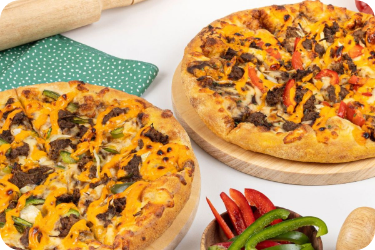

Beranda Resep Artikel Menjadi Vegan?
|
Domino’s Indonesia Merilis 2 Pizza ‘Beefless’ Baru yang Terinspirasi Dari Asia Caelia Dorso | 19 November 2021 
Domino’s Indonesia menambahkan dua item baru tanpa daging ke dalam menunya. Dua potongan baru yang terinspirasi dari Asia
akan menjadi potongan daging sapi ramah vegan Green Rebel dan sekarang tersedia di semua 162 outlet Domino di seluruh negeri.
Rantai pizza terkenal di dunia Domino’s telah memperluas penawaran nabatinya di Indonesia, menawarkan dua pizza tanpa daging
baru dengan daging sapi nabati Pemberontakan Hijau. Potongan “Plantt Pro” baru termasuk Dendeng Lada Hitam dan Rentong Daging
Sapi Spesial, yang terinspirasi oleh cita rasa lokal Indonesia.
Kedua pizza baru sekarang tersedia untuk dibawa pulang dan pengiriman online di semua 162 gerai Domino di seluruh negeri. Domino’s
Indonesia dijalankan oleh F&B Asia Ventures, divisi QSR dari Everstone Capital, yang juga memiliki hak Burger King di Indonesia dan India.
Keputusan Domino untuk menambahkan bahan-bahan baru Indonesia yang ramah vegetarian ke dalam menunya menjadikan rantai makanan cepat
saji sebagai bagian dari tren nabati global yang berkembang. Dengan sebanyak 42% Sementara konsumen global sekarang “fleksibel” atau
vegetarian paruh waktu, didorong oleh masalah kesehatan, lingkungan dan etika, raksasa QSR berada di bawah tekanan yang meningkat untuk
menyediakan lebih banyak makanan vegetarian dan vegetarian.
|